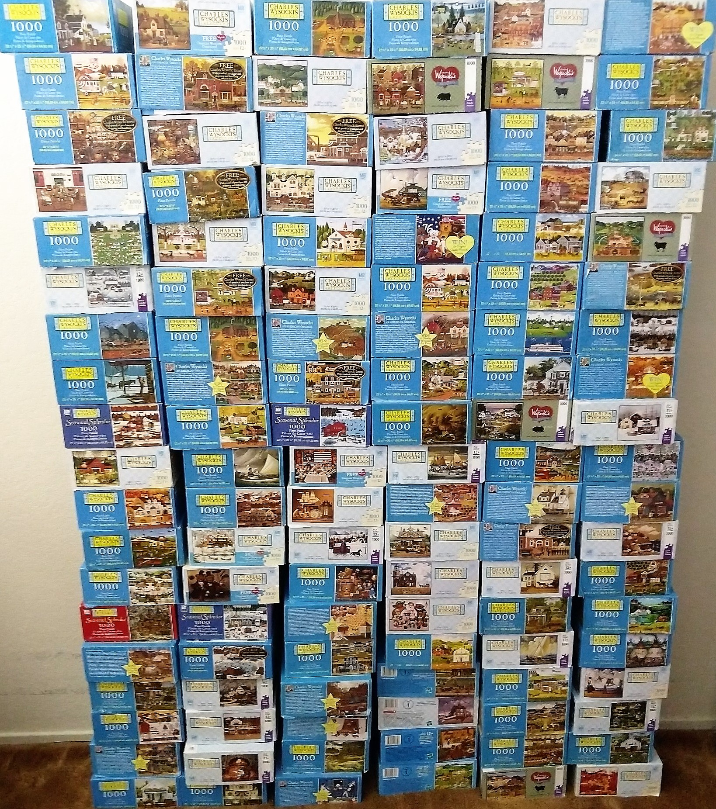

2026-07-07
It begins, as it always begins, with the sound. A thousand pieces poured out of a box onto a table make a soft, dry clatter — part rain, part small applause — and for a second the whole puzzle is just weather. Then the picture on the box lid gets propped against the salt shaker, the pieces get flipped face-up in drifts, and the week quietly reorganizes itself around a table that nobody is allowed to clear.
There are faster hobbies. There are hobbies with scores and finishes and personal bests. The jigsaw puzzle offers none of that, and its devotees would not trade. What it offers instead is a week with a beautiful problem sitting in the middle of it, patient as a cat, asking nothing, ready whenever you are.
Every puzzler, from the age of six upward, reinvents the same opening move: find the edges. It is not superstition; it is architecture. The border is the only part of the picture whose pieces announce themselves, flat on one side, honest about their intentions. You hunt the straight edges out of the drift the way you would sort a drawer, and slowly the frame assembles, and the frame changes everything. A bounded problem is a kinder problem. Inside that border, chaos has a fence around it.
The ritual has a pedigree worth knowing. The first jigsaw puzzles were teaching tools — maps of Europe mounted on hardwood in the 1760s and cut along the borders so children could learn geography by hand, piece by piece, country by country. The name is a small historical accident: the earliest ones were cut with fretsaws, and the jigsaw came later, but the name stuck the way puzzle pieces do. What began as a geography lesson for the children of the wealthy became, two centuries on, the most democratic of pastimes: a whole cathedral, a harbor at sunset, a garden in full bloom, folded into a box that costs less than the frame you'd hang it in.
Once the border stands, the real sorting begins, and every household develops its own system with the seriousness of a small government. Sky in one pile, water in another. The red barn gets a pile of its own. Anything with an eye in it — puzzles with animals always have a piece with one unsettling eye — goes somewhere visible, because you will spend three days looking for it otherwise.
Sorting looks like procrastination and is actually the puzzle solving itself in advance. Your hands learn the shapes while your eyes are busy with colors. A piece you cannot place is a piece you have not really looked at yet, and the sort forces the looking. Somewhere in the second evening, someone at the table will pick up a piece, turn it twice, and set it down in exactly its home with the quiet click that puzzlers live for — the piece that was in your hand for half an hour before it was in your hand for one second. There is no ranking system for that moment. There doesn't need to be. Everyone at the table heard the click.

The puzzle's real trick is what it does to the room. A table with a puzzle on it is a table with a purpose that outlasts dinner. Chairs get pulled up at odd hours. Someone passing through on the way to the kitchen stops, stands, leans, and sits — twenty minutes gone, two pieces placed, coffee cold, nobody sorry. The puzzle works on the household's schedule the way a slow river works on a landscape: gradually, and entirely to its benefit.
It also makes a fine companion to other quiet things. A radio murmuring in the background suits it — a ballgame with long pauses, a quiz show, Will Shortz and the Sunday Puzzle on a weekend morning, wordplay for the ears while the hands hunt for one particular shade of harbor blue. The puzzle asks for a specific quality of attention: alert but unhurried, engaged but never strained. It is the opposite of a deadline. It is a landscape you are allowed to finish at walking pace.
And the unfinished sections are not failures-in-waiting. The sky, in most puzzles, is a hundred pieces of nearly identical blue, and it will still be there on Thursday, and that is fine. The puzzle does not keep score of your evenings. It simply keeps them.
Here is the thing nobody tells you when you pour out the box: an unfinished puzzle is an invitation that never has to be spoken. Guests who would never accept a formal activity will drift to the table after dinner and put in a piece. Teenagers, those connoisseurs of the uncommitted hour, will place three pieces with extravagant casualness and wander off having enjoyed themselves in a deniable way. The puzzle gives a room something generous to do with its silences. Conversation happens over it the way it happens over a campfire — easily, sideways, without anyone having to perform.
Then, one evening, the pile is down to a handful of pieces, and the table gets quiet in a new way, and the last pieces go in one by one, each with a small ceremony of one. The final piece is traditionally saved, disputed, and finally placed by acclamation. The picture is whole. It sits there for a day, maybe two, admired in passing.
Then somebody breaks it up, back into the box, a thousand pieces making that soft dry clatter again — and the sound is not sad at all. It is a promise that the table can be set again whenever the house needs a quiet center: one box, one lid propped against the salt shaker, one unhurried week.